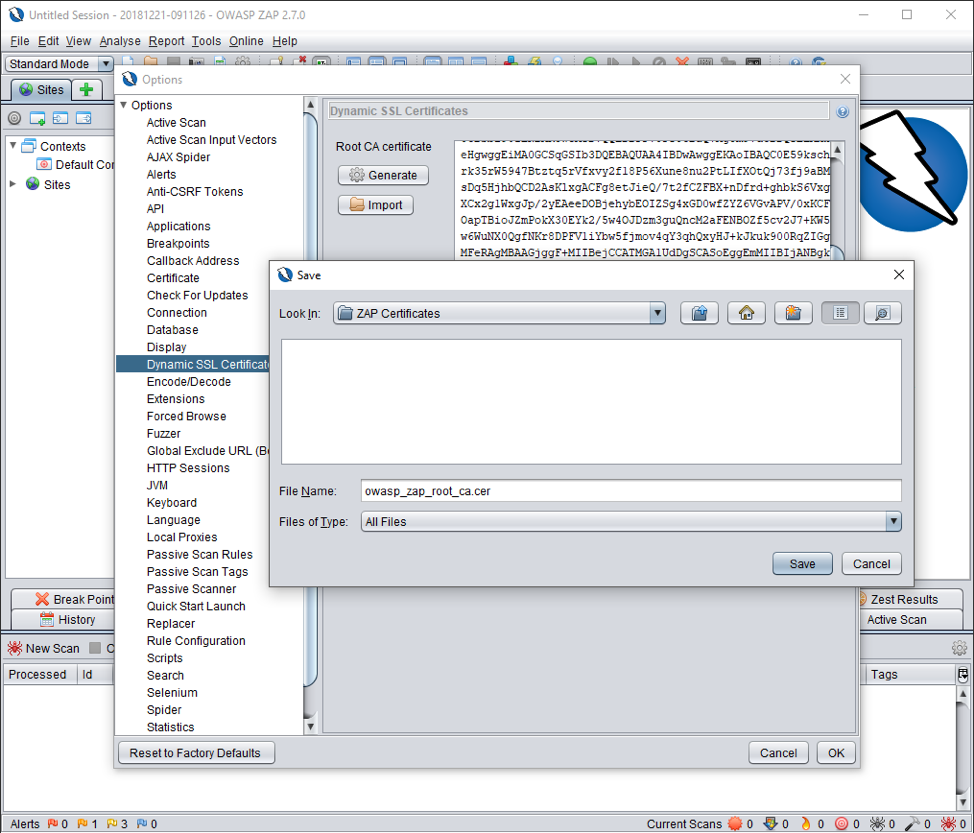

Configuring OWASP ZAP Proxy To Trace Browser Traffic.
Posted on Fri 21 December 2018 in Security Testing • 2 min read

OWASP Zed Attach Proxy (ZAP) is an open source free security tool which is being actively maintained. It helps automatically find security vulnerabilities in your web application by intercepting the traffic between your web browser and application.
In this article, I will be explaining basic steps on how to configure ZAP Proxy to trace the browser traffic. I will be covering following:
- Setting ZAP local proxy
- Generating & Saving Root CA Certificate
- Configure CA Certificate in Firefox
- Configure Proxy in Firefox
- Testing ZAP Proxy Configuration
Configuring ZAP Proxy To Trace Browser Traffic
Step 1: Setting ZAP Local Proxy
Goto Tool => Options => Local Proxies and set the hostname/ip address and port number for the proxy. In this example, the port is set to 8080 which is selected randomly. Make sure this port is not user by any other application.
Step 2: Generate & Save Root CA Certificate
Goto Tool => Options => Dynamic SSL Certificates and click on Generate button to generate a new Root CA Certificate. Save the newly generated certificate on your hard drive

Step 3: Configure CA Certifcate in Firefox
Goto Settings => Options => Privacy & Security => Certificate => View Certificates => Import and import the newly downloaded Root CA Certificate.
Step 4: Configure Proxy in Firefox
Goto Settings => Preferences => General => Network Proxy => Settings => Manual Proxy Configuration
Step 5: Testing ZAP Proxy Configuration
Once the Proxy & Certificate is set properly, when you navigate to the website, you will start noticing the HTTP Response & Request.